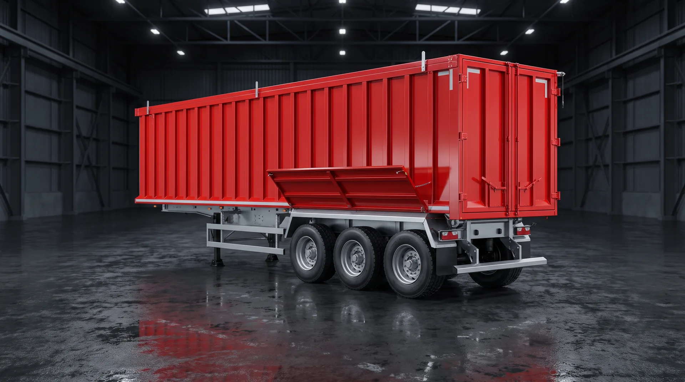
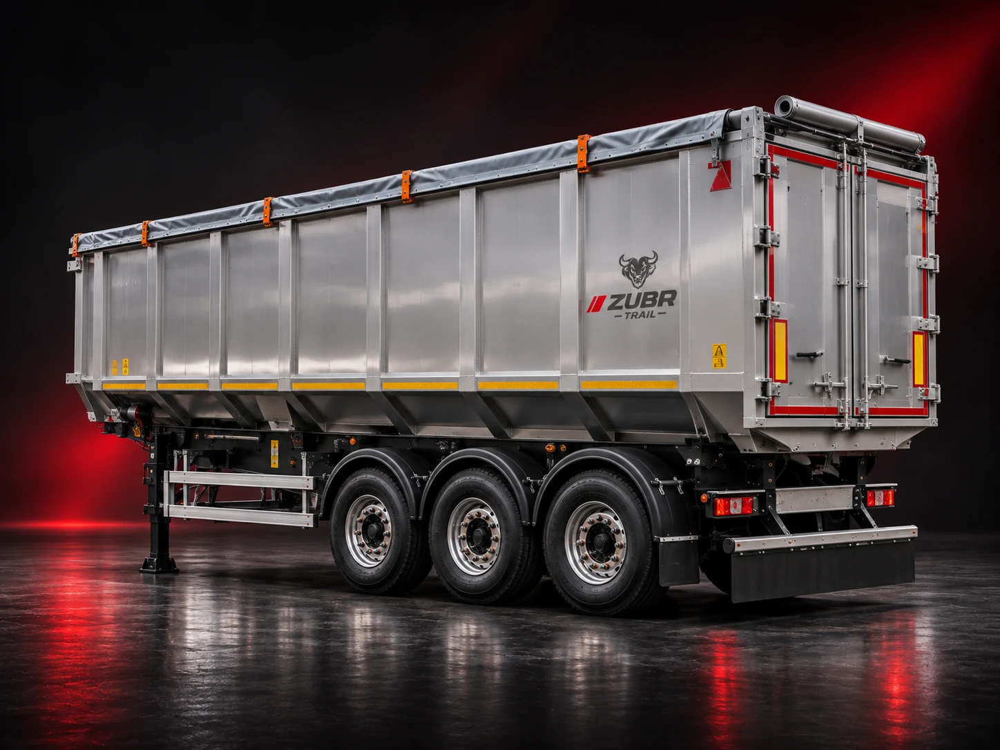
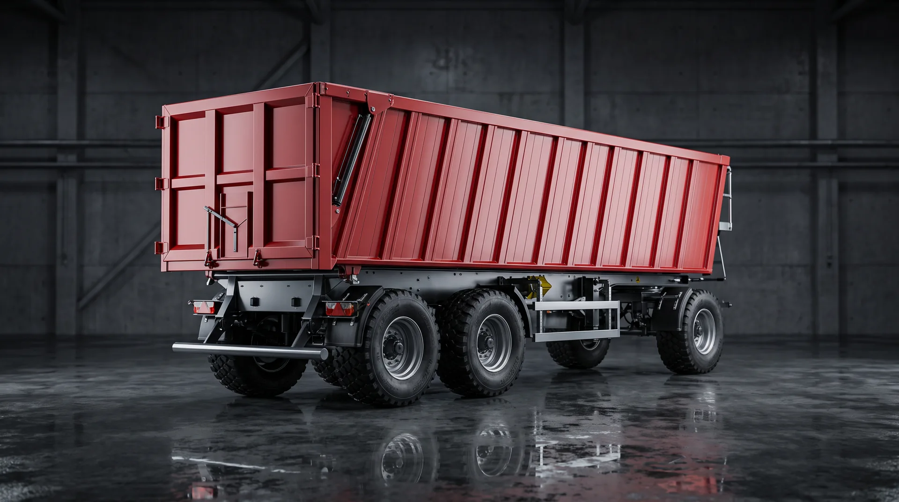
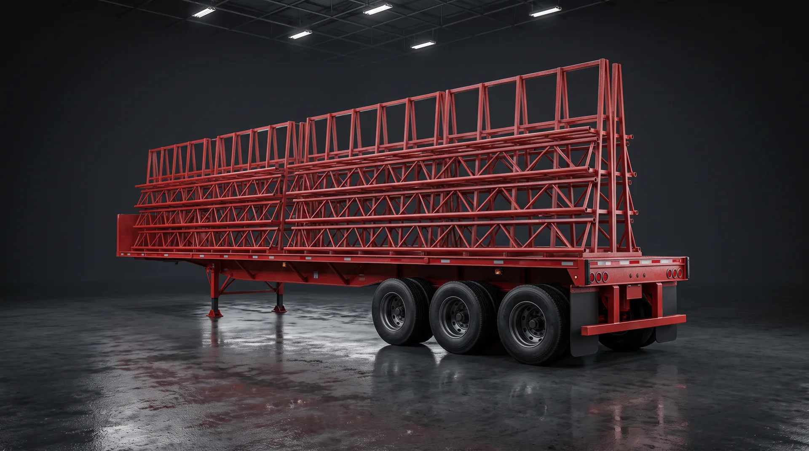
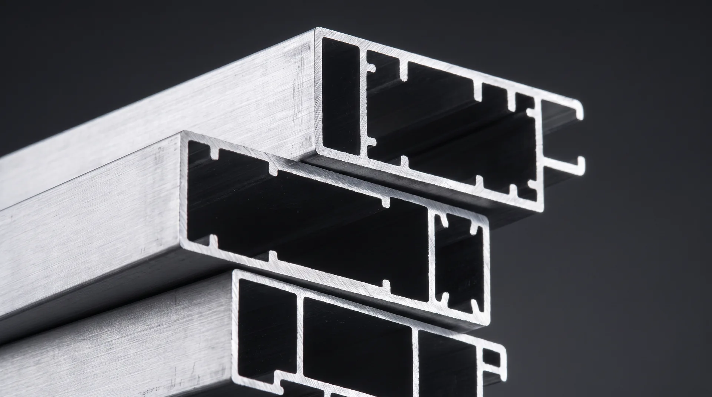

01 / EUROPEAN EDITORIAL
ДВИЖЕНИЕ
ИМЕЕТ
СМЫСЛ.
Современные полуприцепы для ваших задач. Техника для маршрутов, грузов и решений, от которых зависит ваш бизнес.
SAT—500ИЗОБРАЖЕНИЕ — ВИЗУАЛИЗАЦИЯ
ПОЛУПРИЦЕПЫ ZUBR TRAILАГРО · ПРОМЫШЛЕННОСТЬ · СТРОИТЕЛЬСТВОИНЖЕНЕРИЯ ДЛЯ ЗАДАЧ
01 / НАША ЛИНЕЙКАФОРМА СЛЕДУЕТ
ФОРМА СЛЕДУЕТ
ЗА ЗАДАЧЕЙ.
Шесть моделей для разных сценариев перевозок. Выберите тип техники и перейдите к подробным характеристикам.





Изображения продукции в макете являются концептуальными визуализациями, а не подтверждёнными фотографиями серийных изделий.

02 / ТЕХНОЛОГИИ И ПРЕИМУЩЕСТВАПРОДУМАНО
ПРОДУМАНО
В ДЕТАЛЯХ.
Конструкция, тип кузова, система разгрузки и эксплуатационные условия — это не отдельные пункты спецификации, а единое транспортное решение.
Узнать о технологиях ↗03 / ПОДХОДВАШ ГРУЗ.
ВАШ ГРУЗ.
НАША ЗАДАЧА.
Логика подбора
Решение начинается с груза и места разгрузки, а не только с цифры объёма.
Варианты исполнения
Масса, объём и компоненты проверяются для конкретной модификации.
Удобный диалог
Специалисты помогают сопоставить транспортную задачу с модельным рядом.
ZUBR TRAIL / СЛЕДУЮЩИЙ ШАГВЫБЕРЕМ
Обсудить задачу ↗